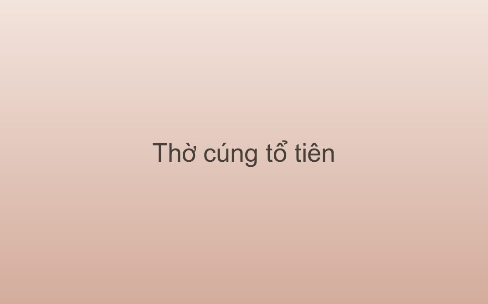

Tín ngưỡng
Thờ cúng tổ tiên là một nét đẹp văn hóa tâm linh, thể hiện đạo lý “uống nước nhớ nguồn” của người Việt.

Tín ngưỡng thờ cúng tổ tiên hình thành từ quan niệm rằng người đã khuất vẫn hiện diện và dõi theo con cháu. Ban thờ gia tiên vì thế là nơi trang trọng nhất trong nhà, và việc chăm sóc nó là bổn phận của mọi thế hệ.
Cây có gốc mới nở cành xanh ngọn, nước có nguồn mới bể rộng sông sâu.
Lưu ý. Lễ vật không cần cầu kỳ. Điều được coi trọng là sự thành tâm và ban thờ luôn sạch sẽ, ấm hương.